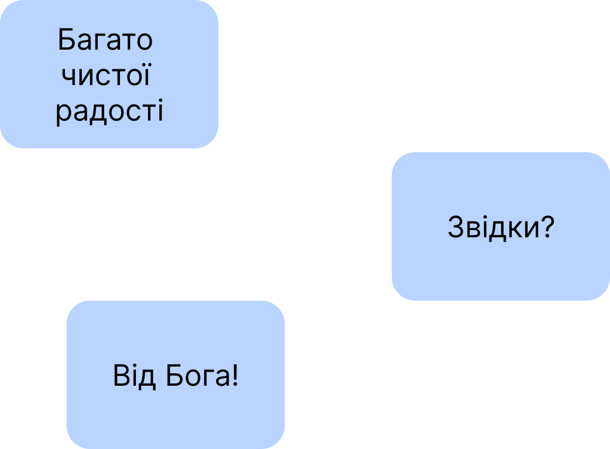

Слава Ісусу Христу!
☀️
Оскільки у праці, опублікованій за посиланням:
https://oleksandr-zhabenko.github.io/uk/commentaries/02082025.html
а ще раніше в інших, опублікованих за посиланнями:
https://churchandsociety.org.ua/pdf/projects/zbirnyk.pdf
https://oleksandr-zhabenko.github.io/uk/commentaries/17082024.html
https://oleksandr-zhabenko.github.io/uk/commentaries/12112025.html
https://oleksandr-zhabenko.github.io/uk/commentaries/27112024.html
написано, що вживання прийменників має важливе значення для правильного розуміння важливих і актуальних питань, зокрема питання влади, то пишу коментарі щодо вживання саме цих прийменників. Як порада щодо читання написаного — можна читати вірш у перекладі чи/та оригіналі (хто має таку змогу), а тоді відповідний коментар щодо прийменників тут. Далі потрібно зрозуміти, якої частини вірша стосується коментар, а також обдумати, що суттєве для розуміння він стверджує — чи рідше — заперечує. Таке вдумливе читання допомагає поглибити розуміння і береже від згаданих помилок.
Важливими творами, які проливають більше світла на цю тему також є наступні:
https://oleksandr-zhabenko.github.io/uk/commentaries/28052026.html
https://oleksandr-zhabenko.github.io/uk/commentaries/16082026.html
Підготував покращений варіант мого дослідження, презентація якого доступна за посиланням:
https://www.facebook.com/Oleksandr.S.Zhabenko/posts/2447150899034358
https://oleksandr-zhabenko.github.io/uk/commentaries/vystup-2025-hypo-genitive-Romans-XIII_1.pdf
Матеріал дослідження наразі готується до публікації. Маю надію, якщо дасть Бог, пізніше представити повніші результати після виходу публікації.
Сам список посилань щодо прийменників буду оновлювати за посиланнями:
https://oleksandr-zhabenko.github.io/uk/commentaries/02082025.html
https://oleksandr-zhabenko.github.io/uk/commentaries/Pryjmennyky.html
крайній — раз або двічі на місяць, щоб зберігати актуальною версію тексту і надалі.
Згадки Стронга (прим. за Стронгом) у перекладі оригінального тексту означають, що слово узято зі словника Стронга, а конкретне значення обране після перекладу та коментаря Google Gemini.
Рання:
Про читання з Євангелія дивіться за посиланнями:
https://oleksandr-zhabenko.github.io/uk/commentaries/25032026.html
https://oleksandr-zhabenko.github.io/uk/commentaries/24062025.html
https://oleksandr-zhabenko.github.io/uk/Pryinyattya.html
https://oleksandr-zhabenko.github.io/uk/commentaries/Pryjmennyky.html
https://oleksandr-zhabenko.github.io/uk/commentaries/02082025.html
https://oleksandr-zhabenko.github.io/uk/commentaries/28052026.html
Літургія:
1 Солунян III, 1 – ‘ἐν Ἀθήναις μόνοι’ – ‘en Athenais monoi’ – лише в Афінах
. Де.
1 Солунян III, 2 – ‘ἐν τῷ εὐαγγελίῳ τοῦ Χριστοῦ' – 'en to euangelio to CHristou’ – у благовісті Христа; благовістям Христа
. Можливі обидва варіанти перекладу, хоча перший має перевагу – перший підкреслює участь у поширенні віри у Христа через проповідь і життя, тоді як другий вказує на те, що цим благовістям Тимофій співпрацює Богові. ‘εἰς τὸ στηρίξαι ὑμᾶς καὶ παρακαλέσαι’ – ‘eis to sterixai hymas kai parakalesai’ – для зміцнення (утвердження) і утішення вас
. Прийменник ‘eis’ вказує тут на мету дії.
1 Солунян III, 3 – ‘ἐν ταῖς θλίψεσιν ταύταις’ – ‘en tais thlipsesin tautais’ – у цих утисках; у цих гоніннях
. У чому, в яких обставинах. ‘εἰς τοῦτο κείμεθα’ – ‘eis touto keimetha’ – для цього [ми] покладені; у це ми покладені
. Тут пасивний стан покладені
. Кращим бачиться другий варіант перекладу, оскільки перший містить у собі думку про протиставлення активності вірних, зокрема і апостолів, і самого Павла – ніби Бог умістив вірних у стан гонінь, тоді як вони самі у цьому не брали участі, не хотіли (тоді виходить, що бажання Бога і вірних протистоять одне одному, що означає гріховність, а не свідчення вірності апостолів та християн у труднощах за віру). Натомість другий варіант не має смислу мети Бога
– йдеться лише про те, що Бог допустив і допускає гоніння, але ніяк не хоче, щоб вірні були гнані і переслідувані. Це останнє найкраще узгоджується зі словами молитви Господньої, також загалом з вірою Церкви. Дивіться зокрема за посиланнями:
https://oleksandr-zhabenko.github.io/uk/commentaries/21022026.html
https://oleksandr-zhabenko.github.io/uk/commentaries/01032025.html
https://oleksandr-zhabenko.github.io/uk/commentaries/15072023.html
https://oleksandr-zhabenko.github.io/uk/commentaries/vystup-2025-hypo-genitive-Romans-XIII_1.pdf
Також потрібно розуміти увесь вірш у контексті, разом з попередніми та наступними, а не окремо. Подальший 4 вірш показує, що апостоли казали наперед про те, що можуть бути страждання, тобто готували учнів до того, щоб вони були готові, якщо (коли) ті будуть. Така готовність дозволяє реально дивитися на стан справ.
Якщо бажаєте знати більше, напишіть мені, будь ласка.
1 Солунян III, 5 – ‘εἰς τὸ γνῶναι τὴν πίστιν ὑμῶν’ – ‘eis to gnonai ten pistin hymon’ – для пізнання вашої віри
. Прийменник ‘eis’ вказує тут на мету дії. ‘εἰς κενὸν’ – ‘eis keinon’ – намарно; надаремно
. Сталий вислів.
1 Солунян III, 6 – ‘ἀφ' ὑμῶν’ – ‘aph hymon’ – від вас
. Прийменник ‘apo’ у його формі перед наступним ‘hy’ вказує тут на те, що Тимофій залишив солунян, прибувши до Павла.
1 Солунян III, 8 – ‘ἐν κυρίῳ’ – ‘en kyrio’ – у Господі
. У Кому стоїте.
Більше про читання з Апостола дивіться за посиланнями:
https://oleksandr-zhabenko.github.io/uk/commentaries/17112025.html
https://oleksandr-zhabenko.github.io/uk/commentaries/02122024.html
https://oleksandr-zhabenko.github.io/uk/commentaries/13112023.html
Луки XI, 31 – ‘ἐγερθήσεται ἐν τῇ κρίσει μετὰ τῶν ἀνδρῶν τῆς γενεᾶς ταύτης’ – ‘egerthesetai en te krisei meta ton andron tes geneas tautes’ – встане (підніметься, воскресне) у суді з чоловіками цього роду
. Тобто через порівняння з тими, хто відкинув Христа і судив Його та цариця, не знавши Христа, отримає похвалу і славу, наче воскресне
як особистість (хоча тілесне воскресіння уже на той час відбудеться раніше), як вірна Богові. ‘ἐκ τῶν περάτων τῆς γῆς’ – ‘ek ton peraton tes ges’ – з країв землі
. Тобто з віддалених місць, які були тоді заселеними людьми.
Луки XI, 32 – ‘ἀναστήσονται ἐν τῇ κρίσει μετὰ τῆς γενεᾶς ταύτης’ – ‘anastesontai en te krisei meta tes geneas tautes’ – воскреснуть у суді з родом цим
. Тут ця думка підкреслена ще більше, бо ті ніневійці до того були грішниками і покаялися. Перше слово у попередньому вірші означає встати з положення сидіння чи лежання
, тобто отримати славу, мавши незначне положення до того. А друге ще чіткіше означає воскреснути
— мертві через гріхи ніневітяни покаялися через проповідь Іони і на суді воскреснуть
не просто піднявшись, але наче воскреснуть, ставши знову Божими дітьми. Христове спасіння поширюється не лише на вірних, але на всіх людей. ‘μετενόησαν εἰς τὸ κήρυγμα Ἰωνᾶ’ – ‘metenoesan eis to kerygma Iona’ – покаялися у проповідь Іони; перемінили розум у проповідь Іони
. Тобто проповідь ввела
їх у покаяння. А вони змінили розум назустріч їй, щоб увійти у неї як розкаяні та оновлені
. Паралель до молитви Господньої, але обернена – спонука до входження у покаяння, звідси – праведність і святість.
Луки XI, 33 – ‘εἰς κρύπτην’ – ‘eis krypten’ – у сховок
. Куди. ‘ὑπὸ τὸν μόδιον’ – ‘hypo ton podion’ – під корзину (якою міряли сипкі речовини, зокрема зерно)
. Прийменник ‘hypo’ тут з аккузативом і вказує, під що не ставлять світильник (ця міряльна корзина зовсім не призначена для світильника). Цієї частини вірша немає у деяких давніх списках Євангелія.
Можна ще сказати, що Господь судитиме людей за їх відкритістю до Божої волі — зокрема і язичників. І у цій відкритості, у цьому пошуку багато язичників можуть служити прикладом для лукавого роду
.
Більше про читання з Євангелія дивіться за посиланнями:
https://oleksandr-zhabenko.github.io/uk/commentaries/17112025.html
https://oleksandr-zhabenko.github.io/uk/commentaries/28102024.html
https://oleksandr-zhabenko.github.io/uk/commentaries/30102023.html
Богродиці:
Більше про читання з Апостола дивіться за посиланнями:
https://www.facebook.com/Oleksandr.S.Zhabenko/posts/
https://oleksandr-zhabenko.github.io/uk/commentaries/15082025.html
https://oleksandr-zhabenko.github.io/uk/commentaries/30072026.html
https://oleksandr-zhabenko.github.io/uk/commentaries/07082025.html
https://oleksandr-zhabenko.github.io/uk/commentaries/15082024.html
https://oleksandr-zhabenko.github.io/uk/commentaries/28082023.html
https://oleksandr-zhabenko.github.io/uk/commentaries/21042023.html
https://oleksandr-zhabenko.github.io/uk/commentaries/01042023.html
Про читання з Євангелія дивіться за посиланнями:
https://www.facebook.com/Oleksandr.S.Zhabenko/posts/
https://oleksandr-zhabenko.github.io/uk/commentaries/15082025.html
https://oleksandr-zhabenko.github.io/uk/commentaries/15082024.html
https://oleksandr-zhabenko.github.io/uk/commentaries/28082023.html
https://oleksandr-zhabenko.github.io/uk/commentaries/21042023.html
https://oleksandr-zhabenko.github.io/uk/commentaries/01042023.html
Слава Тобі, Боже наш, слава Тобі!